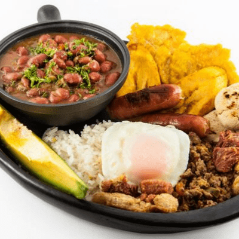

Bandeja Piasa

Bandeja Paisa is probably the most popular dish in Colombia.
Bandeja means platter and you're going to need a big one! The dish includes many stand alone dishes served all together.
The Bandeja Paisa recipe includes red beans, white rice, chicharrón, carne en polvo, chorizo, fried egg, ripe plantain, avocado, arepa and hogao.
Ingredients List:
Bandeja Paisa Ingredients
- 2 Cups White Rice, Cooked
- 4 Chorizos
- 4 Eggs
- 4 Plantains, Baked
- Avocado
- Cilantro
Hogao Ingredients
- 3 TBSP Vegetable Oil
- 1 Cupped Scallions, Chopped
- 1 Clove Garlic, Minced
- 2 Cups Tomatoes, Chopped
- 1 tsp Cumin
- Salt & Peooer to taste
Frijoles Ingredients
- 2 Cups Pinto Beans
- 1/2 lb Pork Hocks
- 1 Cup Carrots, Shredded
- 1/2 Green Plantain, Cut into 1/4" Pieces
- 4 Cups Water
- Pinch of Salt
Shredded Beef Ingredients
- 1 lbs Flank Steak
- 2 Cloves Garlic, Minced
- 2 Scallions, Chopped
- 1/2 tsp Cumin
- 1/2 Cup Onion, Chopped
- 5 Cups Water
- Salt & Pepper to Taste
Chicharrones Ingredients
- 1 lb Skinless Pork Belly
- 2 tsp Kosher Salt
- 2 tsp Sugar
- 1/2 tsp Cumin
Preperation:
Hogao Preperation
- Heat oil in a saucepan, add the tomatoes, scallions, garlic, cumin and cook until softened, about 10 minutes.
- Add salt, reduce heat to low and cook until the sauce has thickened.
- Taste and adjust the seasoning.
Frijolas Preperation
- Wash your beans and soak overnight in cold water. Drain the beans and place them in a large pot, add water and pork hocks.
- Bring the beans to a boil over high heat, cover the pot and reduce heat to low. Allow the beans to cook until almost tender, about 2 hours.
- When the beans are tender, add the hogao, plantains, carrots and salt. Cover and cook until beans are fully cooked, about 1 hour, add additional water if needed.
Shredded Beef Preperation
- Put flank steak, garlic, scallions, onion, cumin, salt and pepper in a plastic bag and refrigerate for 2 hours.
- Place the flank steak and water in a large pot and bring it to a boil over high heat. Reduce heat to low and cook beef for 1 hour. Remove beef from water and set aside to let cool.
- Cut beef into pieces and place in a food processor. Process until the beef is of a powdered consistency.
Chicharrones Preperation
- Mix salt, sugar and cumin and rub evenly on pork. Wrap pork in plastic wrap, and chill 6 to 12 hours.
- Preheat oven to 425°F. Unwrap pork and place fat side up on a lightly greased wire rack on a rimmed baking sheet. Bake until golden brown and crispy, about 30 minutes.
- Reduce oven temperature to 250°F and cook until pork is tender when pierced with a fork, about 1 hour and 15 minutes.
- Let cool and then refrigerate until firm, about 1 hour.
- Remove from the refrigerator and cut pork into 4 strips. Cut deep slits crosswise in pork about 1" apart. Heat a large skillet over medium heat. Cook pork until golden brown and crispy, about 4 minutes per side.
Assembling the Bandeja Paisa:
- Prepare the hogao, beans and shredded beef one day ahead and keep in the refrigerator. Heat when ready to serve.
- Fry baked plantains in deep frying oil.
- Fry eggs and chorizos.
- To serve, place ingredients on a large platter with sliced avocado and cilantro.